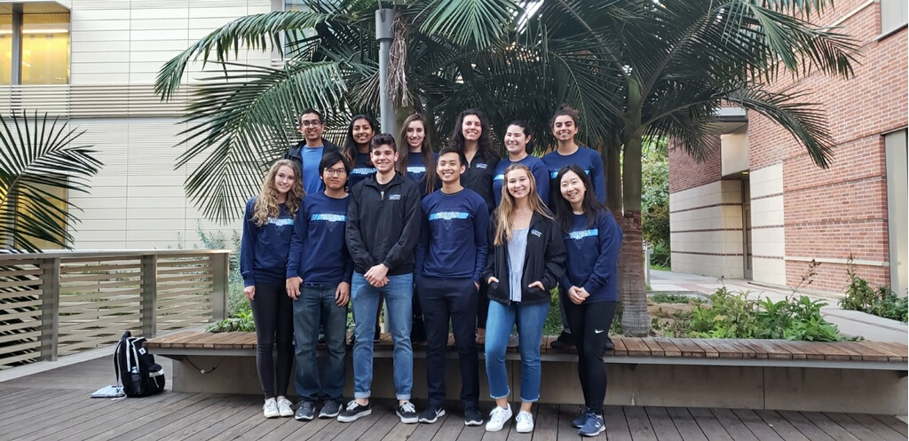

Our Mission
MRS is the premiere organization for the Materials Science and Engineering Department at UCLA. We aim to provide members with hands on opportunities to work with Materials, guidance in finding Research positions, and forming a supportive well connected Society.
Join MRS!
Interested in joining the club? Feel free to attend any of our events! All students, regardless of major, who are eager to learn about materials science and engineering can join the club! Our club does not have dues and students can become members at any time during the year.
Upcoming Event Highlights!
6pm 5/2/19 - Post Grad PanelHear from current seniors and recent graduates about their post-graduation plans!
MRS Calendar
